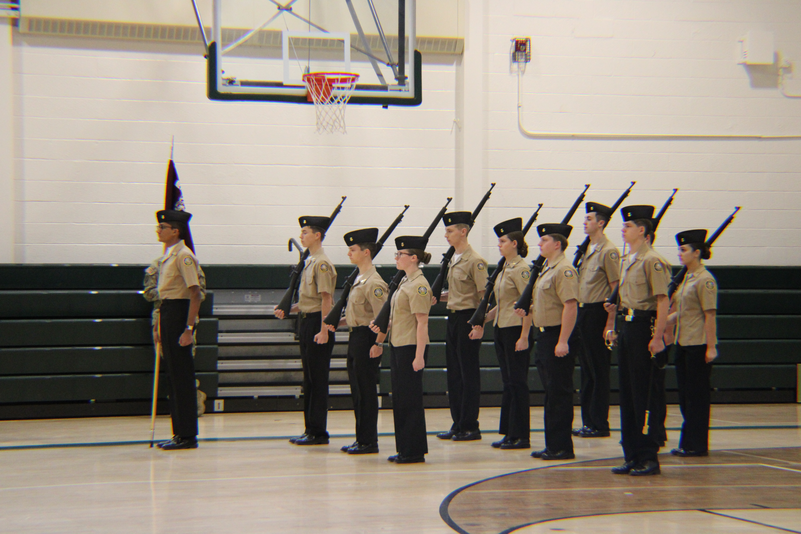

Learning focus
Instructor-led training combines regulation marching with approved manual-of-arms movements using unit-issued demilitarized drill rifles.
- Safety checks
- Approved positions
- Formation discipline
Movements and equipment use require governing-guidance review and Naval Science Instructor approval before publication or practice.